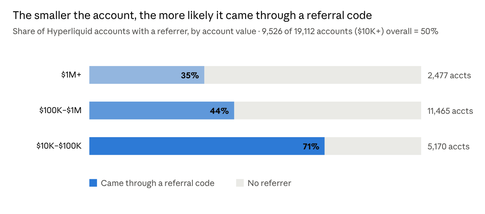
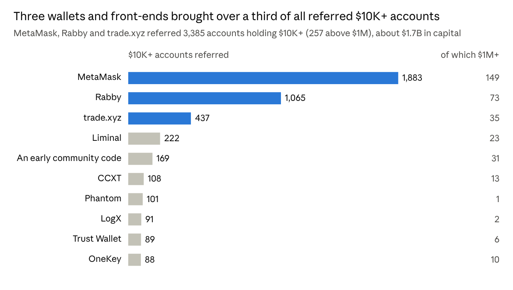
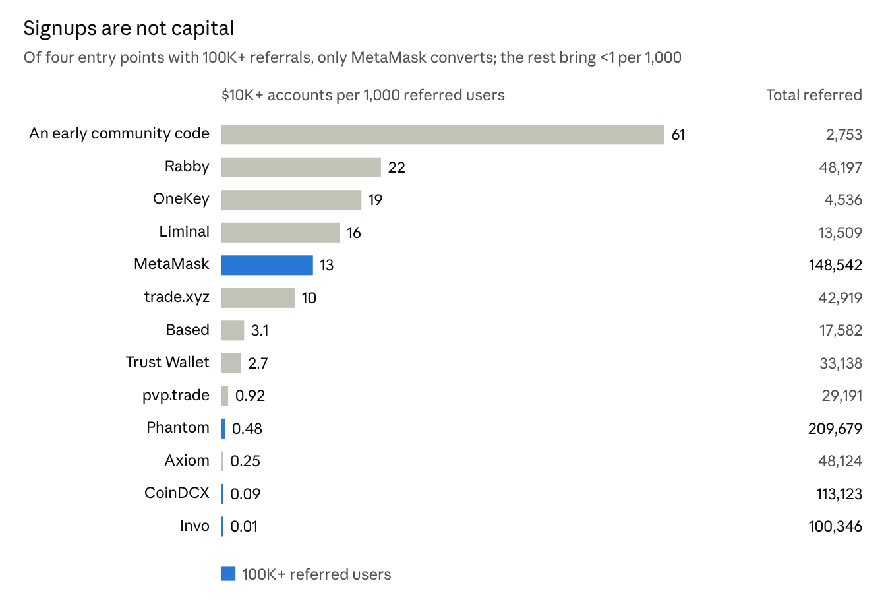

Capital & distribution
Who Actually Brings Capital to Hyperliquid? Referral Data from 19,112 Accounts
Half of the Hyperliquid leaderboard accounts holding at least $10,000 had a referrer. The biggest signup channels and the channels associated with the most $10K+ accounts often ranked very differently.
One app on Hyperliquid, Invo, has referred more than 100,000 users. Exactly one appeared in the $10K+ leaderboard sample. Meanwhile, three wallets and front ends were associated with 3,385 such accounts.
For anyone building distribution on Hyperliquid, it matters whether the goal is signups, trading fees, or reaching accounts with substantial balances. The same channel can rank very differently on each measure.
How we measured
We took every account on the public Hyperliquid leaderboard with at least $10,000 in account value: 19,112 accounts as of November 11, 2026. We looked up each account’s recorded referrer, pulled the stats for each referrer we found, and grouped accounts into three value bands: $1M+, $100K to under $1M, and $10K to under $100K.
Hyperliquid’s public referral data records which code an account used and reports how many users a code has referred and how much it has earned. Under the referral terms described in the research, referrers receive 10% of eligible trading fees after the user discount on the first $1B of volume. Referred users get a 4% fee discount on their first $25M, and an address can create a code after trading $10,000.
About half of the $10K+ accounts had a referrer
Of the 19,112 accounts, 9,526 had a referrer. The share fell as account value rose: 71% for $10K to under $100K, 44% for $100K to under $1M, and 35% for $1M+.


One possible explanation is that larger traders are more familiar with perpetuals venues and less likely to choose where to trade based on a fee discount. The referral data does not tell us why a trader used a code. It does show that referrals were more common below $1M, including in the $100K to $1M band that contains most of the accounts in the sample.
Wallets and front ends led by $10K+ accounts
MetaMask referred 1,883 accounts holding $10K+, including 149 holding $1M+. Rabby referred 1,065, including 73 holding $1M+. trade.xyz referred 437, including 35 holding $1M+. Together they accounted for 3,385 accounts, more than a third of all referred $10K+ accounts in the sample. Those accounts held about $1.7B in combined account value.


The rest of the top ten included Liminal, CCXT, Phantom, LogX, Trust Wallet, OneKey, and an early community code. That code was associated with 169 accounts holding $10K+, including 31 holding $1M+, with about $274M in combined account value.
Many of the leading channels are tools traders already use: wallets that hold their keys, terminals they use to trade, or libraries their bots run on. Existing trust is one plausible reason those channels show up in this ranking; the referral records do not measure trust directly.
Signups and account value tell different stories
Per 1,000 all-time referred users, the early community code had 61 accounts in the $10K+ snapshot. Rabby had 22, OneKey 19, Liminal 16, MetaMask 13, and trade.xyz 10.
Phantom had about 210,000 referred users, the most among the referrers we found, and roughly $31M in referral rewards. Of those users, 101 appeared in the $10K+ sample, about 0.48 per 1,000. CoinDCX had about 113,000 referrals and 10 $10K+ accounts. Invo had about 100,000 referrals and one $10K+ account.


The ratios span more than three orders of magnitude among the examples above. Channels with many smaller accounts can still generate substantial trading fees, as Phantom’s referral rewards illustrate. If the goal is to reach accounts with substantial balances, referral counts alone are a poor proxy.
What this means for traders and builders
For traders, the data offers a way to see which tools show up most often in the referral records of larger accounts. For builders and referral partners, it gives a reason to track account value alongside signups and fees when comparing channels.
At AlphaNet, we run quantitative strategies in users’ own Hyperliquid accounts. We care about how much capital users keep deployed as well as how many sign up. This snapshot helps us decide which distribution channels to study further.
Methodology & limits
The sample covers all 19,112 accounts with at least $10,000 in account value on the public leaderboard at the November 11, 2026 snapshot. Accounts outside that leaderboard are not included. MetaMask, trade.xyz, and OneKey each have two codes in the data; those codes are grouped by product. Individual wallets and personal codes are not named.
Account value is a point-in-time balance. It does not measure net deposits, retained capital, or how much incremental capital a referrer caused. The numerator and denominator of the per-1,000 comparison cover different windows, so the ratio is not a cohort conversion rate.
Data sources: Hyperliquid public leaderboard and Hyperliquid Info API documentation.